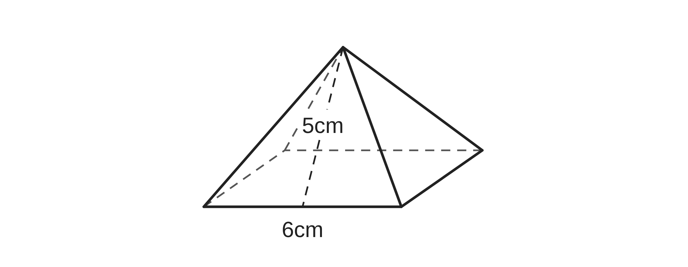
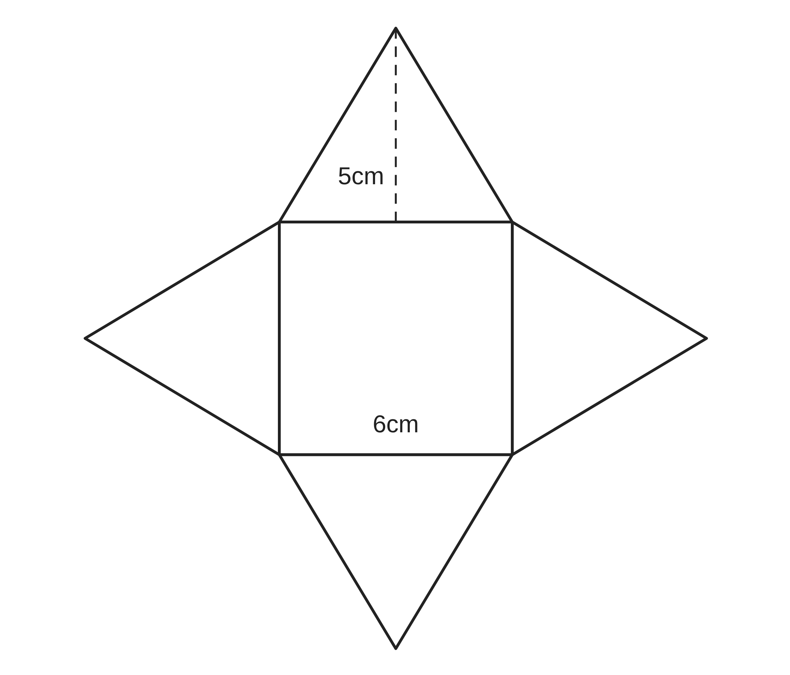
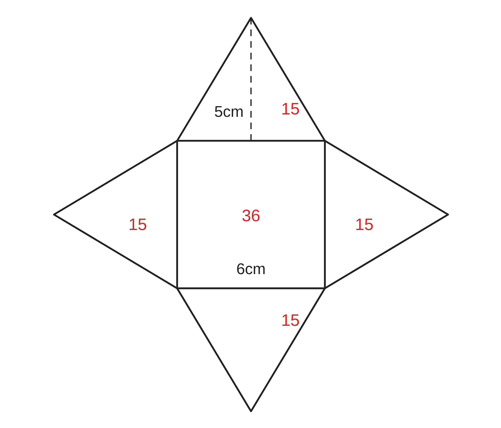
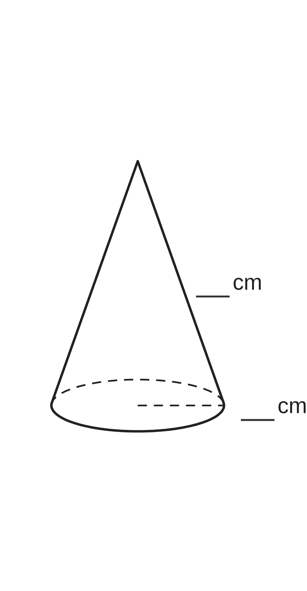
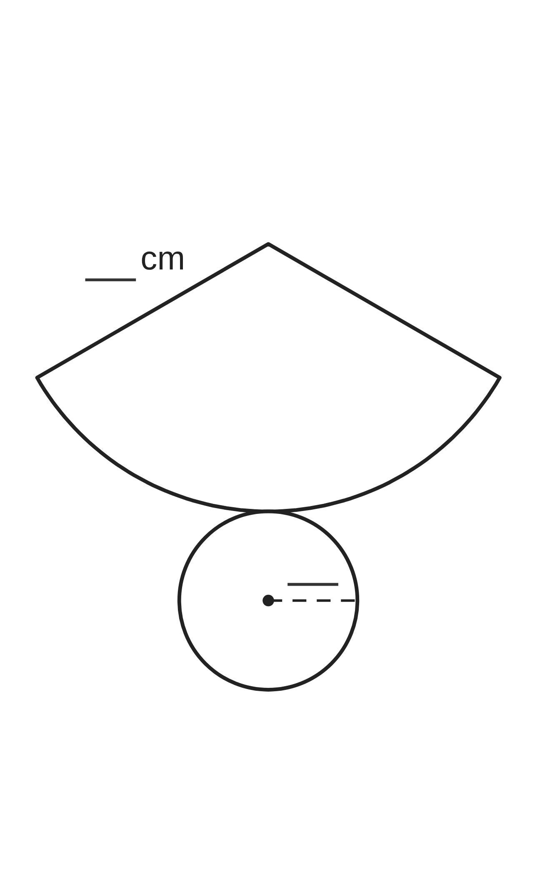
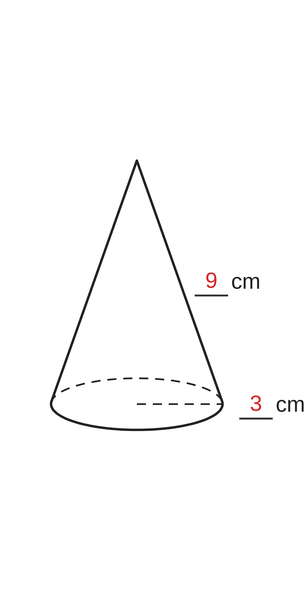
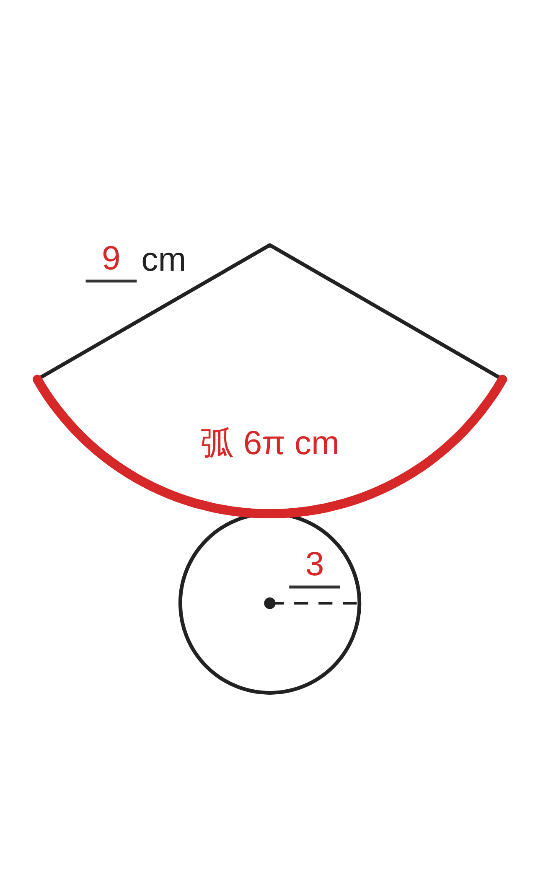

ペア学習
第10時 角錐と円錐の表面積を、展開図を使って求めよう
第9時の重要語句を、1人1問ずつ出題し合う。
言葉の意味を、自分の言葉で言おう。
柱体
表面積
側面積
底面積
展開図
円周
側面
空間図形 第10時 角錐と円錐の表面積を、展開図を使って求めよう
めあて
第10時 角錐と円錐の表面積を、展開図を使って求めよう
学習課題
図の正四角錐の、すべての面の面積の和を求めよう。
展開図をもとに考えよう。（側面は合同な二等辺三角形）


【柱体とのちがい】底面の数に目をつけて、書こう。
空間図形 第10時 角錐と円錐の表面積を、展開図を使って求めよう
学習課題のまとめ
第10時 角錐と円錐の表面積を、展開図を使って求めよう
図の正四角錐の、すべての面の面積の和を求めよう。
側面積 … 1⁄2×6×5×4＝60
底面積 … 6×6＝36
表面積 … 60＋36＝96
（答）96 cm²

柱体とのちがい：柱体は底面が 2つ。錐体は、底面が 1つ。
錐体の表面積＝側面積＋底面積
空間図形 第10時 角錐と円錐の表面積を、展開図を使って求めよう
ことば
第10時 角錐と円錐の表面積を、展開図を使って求めよう
角錐・円錐をまとめて という。
錐体の表面積 ＝ ＋
円錐の側面は で、その半径は の長さに等しい。
おうぎ形の の長さは、底面の に等しい。
円錐の側面積 ＝（母線を半径とする円の面積）
×（弧の長さ÷その円の周）
空間図形 第10時 角錐と円錐の表面積を、展開図を使って求めよう
ことば
第10時 角錐と円錐の表面積を、展開図を使って求めよう
角錐・円錐をまとめて 錐体 という。
錐体の表面積 ＝ 側面積 ＋ 底面積
円錐の側面はおうぎ形で、その半径は母線の長さに等しい。
おうぎ形の弧の長さは、底面の円周に等しい。
円錐の側面積 ＝（母線を半径とする円の面積）
×（弧の長さ÷その円の周）
空間図形 第10時 角錐と円錐の表面積を、展開図を使って求めよう
例題
第10時 角錐と円錐の表面積を、展開図を使って求めよう
底面の半径が cm、
母線の長さが cm の
円錐の表面積を求めよう。
おうぎ形の弧の長さは、
円周の何分のいくつか、考えよう。


空間図形 第10時 角錐と円錐の表面積を、展開図を使って求めよう
例題 解答
第10時 角錐と円錐の表面積を、展開図を使って求めよう
側面は、半径 9cm のおうぎ形
弧の長さ＝底面の円周＝2π×3＝6π
半径 9cm の円の周＝2π×9＝18π
弧は、円周の 6π⁄18π＝1⁄3
側面積 … π×9²×1⁄3＝27π
底面積 … π×3²＝9π
表面積 … 27π＋9π＝36π
（答）36π cm²


空間図形 第10時 角錐と円錐の表面積を、展開図を使って求めよう
考えよう
第10時 角錐と円錐の表面積を、展開図を使って求めよう
①
側面積を求めて、表を完成させよう。（計算は下の余白）
②
気づいたこと
③
ほかの円錐を1つ決めて、②で気づいた
ことが成り立つか、確かめよう。
| 円錐 | ア | イ | ウ | エ |
|---|---|---|---|---|
| 底面の半径 | 2cm | 3cm | 4cm | 5cm |
| 母線の長さ | 6cm | 9cm | 10cm | 12cm |
| 側面積 |
発展
演習まで解き終わった人は、考えてみよう！どんな円錐でも成り立つだろうか。半径を r、母線の長さを ℓ として、考えよう。
空間図形 第10時 角錐と円錐の表面積を、展開図を使って求めよう
振り返り
第10時 角錐と円錐の表面積を、展開図を使って求めよう
今日のめあて
錐体
側面積
底面積
母線
おうぎ形
弧
円周
今日わかったことを、ペアで1つずつ言い合おう。
ワークシートと演習プリントを出そう。（裏の発展は、解き終わった人向け）
空間図形 第10時 角錐と円錐の表面積を、展開図を使って求めよう